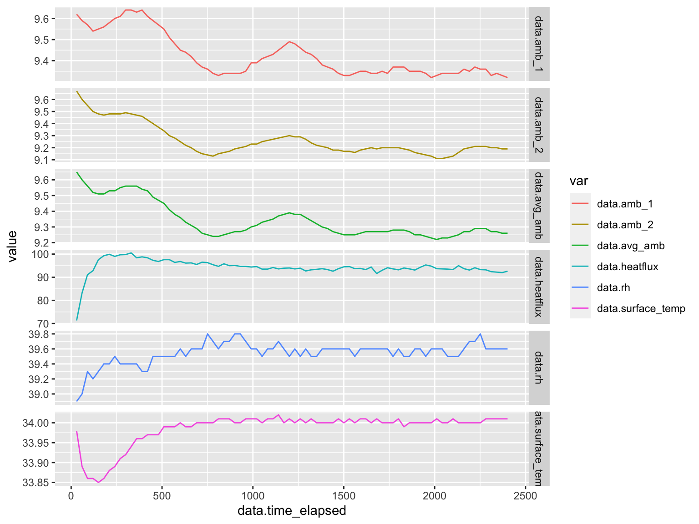
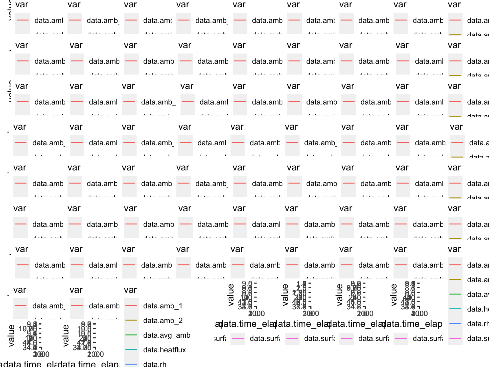

Data QC
Tina Lasisi
March 06, 2022
Last updated: 2022-03-06
Checks: 7 0
Knit directory: HairManikin_manuscript/
This reproducible R Markdown analysis was created with workflowr (version 1.6.2). The Checks tab describes the reproducibility checks that were applied when the results were created. The Past versions tab lists the development history.
Great! Since the R Markdown file has been committed to the Git repository, you know the exact version of the code that produced these results.
Great job! The global environment was empty. Objects defined in the global environment can affect the analysis in your R Markdown file in unknown ways. For reproduciblity it’s best to always run the code in an empty environment.
The command set.seed(20211024) was run prior to running the code in the R Markdown file. Setting a seed ensures that any results that rely on randomness, e.g. subsampling or permutations, are reproducible.
Great job! Recording the operating system, R version, and package versions is critical for reproducibility.
Nice! There were no cached chunks for this analysis, so you can be confident that you successfully produced the results during this run.
Great job! Using relative paths to the files within your workflowr project makes it easier to run your code on other machines.
Great! You are using Git for version control. Tracking code development and connecting the code version to the results is critical for reproducibility.
The results in this page were generated with repository version 4041aec. See the Past versions tab to see a history of the changes made to the R Markdown and HTML files.
Note that you need to be careful to ensure that all relevant files for the analysis have been committed to Git prior to generating the results (you can use wflow_publish or wflow_git_commit). workflowr only checks the R Markdown file, but you know if there are other scripts or data files that it depends on. Below is the status of the Git repository when the results were generated:
Ignored files:
Ignored: .DS_Store
Ignored: .RData
Ignored: .Rhistory
Ignored: .Rproj.user/
Ignored: data/.DS_Store
Ignored: data/.Rhistory
Ignored: data/current/.DS_Store
Ignored: data/raw_manikin_output/.DS_Store
Untracked files:
Untracked: data/raw_manikin_output/~$2020_Dec_GH_WigData_reworked.xlsx
Untracked: output/plt_dry_combo.png
Untracked: output/plt_sweat_max_zero.png
Note that any generated files, e.g. HTML, png, CSS, etc., are not included in this status report because it is ok for generated content to have uncommitted changes.
These are the previous versions of the repository in which changes were made to the R Markdown (analysis/updated-data-qc.Rmd) and HTML (docs/updated-data-qc.html) files. If you’ve configured a remote Git repository (see ?wflow_git_remote), click on the hyperlinks in the table below to view the files as they were in that past version.
| File | Version | Author | Date | Message |
|---|---|---|---|---|
| Rmd | fd2d25b | GitHub | 2022-01-21 | Rename updated-data-qc.Rmd to analysis/updated-data-qc.Rmd |
0.1 Introduction
library(tidyverse)── Attaching packages ─────────────────────────────────────── tidyverse 1.3.1 ──✓ ggplot2 3.3.5 ✓ purrr 0.3.4
✓ tibble 3.1.6 ✓ dplyr 1.0.8
✓ tidyr 1.1.4 ✓ stringr 1.4.0
✓ readr 2.0.2 ✓ forcats 0.5.1── Conflicts ────────────────────────────────────────── tidyverse_conflicts() ──
x dplyr::filter() masks stats::filter()
x dplyr::lag() masks stats::lag()library(lubridate)
Attaching package: 'lubridate'The following objects are masked from 'package:base':
date, intersect, setdiff, unionlibrary(janitor)
Attaching package: 'janitor'The following objects are masked from 'package:stats':
chisq.test, fisher.testlibrary(gridExtra)
Attaching package: 'gridExtra'The following object is masked from 'package:dplyr':
combine F = rprojroot::is_rstudio_project$make_fix_file()
knitr::opts_chunk$set(echo = TRUE, include = TRUE, eval = TRUE, warning = FALSE, message = FALSE, fig.retina = 2, fig.width = 8, fig.height = 6, out.width = "100%")0.2 Introduction
In brief, the experiments were carried out in a climate controlled chamber at the University of Loughborough (UK) using a full-body thermal manikin with 20 independently controllable zones. Human hair wigs ranging from straight to tightly curled were used to test the effect of hair on heat gain/loss in a number of conditions.
The experimental variables were: - head covering (no wig, straight wig, moderately curled wig, tightly curled wig) - radiation (on vs. off) - wind speed (0.3m/s, 1m/s, 2.5m/s) - evaporation (manikin with dry scalp vs. manikin with wet scalp)
0.3 Set-up
Dry heat resistance experiments were carried out from October to November 2018 in a climate controlled chamber with a custom-built wind tunnel (see below).
knitr::include_graphics("assets/manikin-chamber-setup.jpeg", error = FALSE)
| Version | Author | Date |
|---|---|---|
| afab42a | Tina Lasisi | 2021-10-24 |
knitr::include_graphics("assets/manikin-chamber-setup-diagram.png", error = FALSE)
| Version | Author | Date |
|---|---|---|
| c5d6198 | Tina Lasisi | 2021-10-24 |
0.4 Data
The raw data from the manikin is structured as follows
raw_manikin <- read_csv(F("data/raw_manikin_output/round_1/HighCurv_RadOff_wind0_3 (run with new conditions).csv"), skip = 16) %>%
clean_names()
head(raw_manikin)# A tibble: 6 × 79
x1 x2 face_3 head_4 r_up_arm_fr_5 r_up_arm_bk_6 l_up_arm_fr_7
<chr> <chr> <chr> <chr> <chr> <chr> <chr>
1 Time Clock Averag… Averag… Average Surf… Average Surf… Average Surf…
2 Seconds <NA> degC degC degC degC degC
3 30.0117166 15:27:08 37.99 37.96 37.94 37.97 37.95
4 60.0264333 15:27:38 37.98 37.95 37.96 37.97 37.96
5 90.04015 15:28:08 37.96 37.95 37.96 37.97 37.97
6 120.0548667 15:28:38 37.94 37.94 37.97 37.97 37.98
# … with 72 more variables: l_up_arm_bk_8 <chr>, r_forearm_fr_9 <chr>,
# r_forearm_bk_10 <chr>, l_forearm_fr_11 <chr>, l_forearm_bk_12 <chr>,
# r_hand_13 <chr>, l_hand_14 <chr>, upper_chest_15 <chr>, shoulders_16 <chr>,
# stomach_17 <chr>, mid_back_18 <chr>, waist_19 <chr>, lower_back_20 <chr>,
# r_up_thigh_fr_21 <chr>, r_up_thigh_grd_22 <chr>, r_up_thigh_bk_23 <chr>,
# l_up_thigh_fr_24 <chr>, l_up_thigh_grd_25 <chr>, l_up_thigh_bk_26 <chr>,
# r_lwr_thigh_fr_27 <chr>, r_lwr_thigh_bk_28 <chr>, …The data can be cleaned using the following pipeline.
file_parser<- function(file){
return(file %>%
clean_names() %>%
select(c(x1, x2, contains("head"), ambient_71:ambient_74)) %>%
rename(time_elapsed = x1,
time_hms = x2,
surface_temp = head_4,
heatflux = head_38,
avg_amb= ambient_71,
amb_1 = ambient_72,
amb_2 = ambient_73,
rh = ambient_74) %>%
slice(-(1:2)) %>%
as_tibble() %>%
mutate(across(!time_hms, as.numeric)) %>%
mutate(time_hms = hms(time_hms)) %>%
mutate(time_elapsed = dseconds(time_elapsed)) %>%
select(time_elapsed, time_hms, everything())
)
}
head(file_parser(raw_manikin))# A tibble: 6 × 8
time_elapsed time_hms surface_temp heatflux avg_amb amb_1
<Duration> <Period> <dbl> <dbl> <dbl> <dbl>
1 30.0117166s 15H 27M 8S 38.0 87 1.76 1.47
2 60.0264333s (~1 minutes) 15H 27M 38S 38.0 90.4 1.72 1.44
3 90.04015s (~1.5 minutes) 15H 28M 8S 38.0 92 1.67 1.4
4 120.0548667s (~2 minutes) 15H 28M 38S 37.9 93.7 1.62 1.37
5 150.0695835s (~2.5 minutes) 15H 29M 8S 37.9 95 1.57 1.34
6 180.0843002s (~3 minutes) 15H 29M 38S 37.9 96.7 1.53 1.31
# … with 2 more variables: amb_2 <dbl>, rh <dbl>We can then run this pipeline on all the files below.
paths<-list.files("data/raw_manikin_output")
paths<-paths[paths!="Manikin_start_end_times.csv"]
path_info <- list(list())
for (path in paths) {
for (file in list.files(sprintf("data/raw_manikin_output/%s", path))) {
info <- list(path, file)
# print(info[[2]])
path_info <- append(path_info, list(info))
}
}
path_info <- path_info[-1]
get_file <- function(file_info) {
round<-file_info[1]
file_name<-file_info[2]
return(read_csv(F(sprintf("data/raw_manikin_output/%s/%s",round, file_name)), skip = 16))
}
raw_data<-map_df(path_info, function(.x) {
# print(.x)
return(data.frame(round = .x[[1]],
description = .x[[2]],
fullPath = paste(.x[[1]], .x[[2]], sep="/"),
data = file_parser(get_file(.x))
))
})
head(raw_data) round description
1 round_1 HighCurv_RadOff_wind0_3 (run with new conditions).csv
2 round_1 HighCurv_RadOff_wind0_3 (run with new conditions).csv
3 round_1 HighCurv_RadOff_wind0_3 (run with new conditions).csv
4 round_1 HighCurv_RadOff_wind0_3 (run with new conditions).csv
5 round_1 HighCurv_RadOff_wind0_3 (run with new conditions).csv
6 round_1 HighCurv_RadOff_wind0_3 (run with new conditions).csv
fullPath
1 round_1/HighCurv_RadOff_wind0_3 (run with new conditions).csv
2 round_1/HighCurv_RadOff_wind0_3 (run with new conditions).csv
3 round_1/HighCurv_RadOff_wind0_3 (run with new conditions).csv
4 round_1/HighCurv_RadOff_wind0_3 (run with new conditions).csv
5 round_1/HighCurv_RadOff_wind0_3 (run with new conditions).csv
6 round_1/HighCurv_RadOff_wind0_3 (run with new conditions).csv
data.time_elapsed data.time_hms data.surface_temp data.heatflux
1 30.0117166s 15H 27M 8S 37.96 87.0
2 60.0264333s (~1 minutes) 15H 27M 38S 37.95 90.4
3 90.04015s (~1.5 minutes) 15H 28M 8S 37.95 92.0
4 120.0548667s (~2 minutes) 15H 28M 38S 37.94 93.7
5 150.0695835s (~2.5 minutes) 15H 29M 8S 37.94 95.0
6 180.0843002s (~3 minutes) 15H 29M 38S 37.94 96.7
data.avg_amb data.amb_1 data.amb_2 data.rh
1 1.76 1.47 2.05 47.9
2 1.72 1.44 1.99 47.8
3 1.67 1.40 1.93 47.9
4 1.62 1.37 1.86 48.0
5 1.57 1.34 1.80 48.1
6 1.53 1.31 1.74 48.2Next, we group the data (currently this is by every file, but we may want to replace it with some other grouping, I don’t totally understand this part yet!)
good_data <- raw_data %>%
group_by(fullPath) %>%
nest()
head(good_data)# A tibble: 6 × 2
# Groups: fullPath [6]
fullPath data
<chr> <list>
1 round_1/HighCurv_RadOff_wind0_3 (run with new conditions).csv <tibble [90 × 1…
2 round_1/HighCurv_RadOff_wind1.csv <tibble [80 × 1…
3 round_1/HighCurv_RadOff_wind2_5.csv <tibble [90 × 1…
4 round_1/HighCurv_RadOn_wind0_3 (run with new conditions).csv <tibble [96 × 1…
5 round_1/HighCurv_RadOn_wind1.csv <tibble [89 × 1…
6 round_1/HighCurv_RadOn_wind2_5.csv <tibble [97 × 1…In order to visualize data, we then create a plot for each file.
get_image<-function(.x) {
plotted<-.x %>%
pivot_longer(cols = data.surface_temp:data.rh, names_to = "var")
return(
plotted %>%
ggplot(aes(x = data.time_elapsed,
y = value,
col = var)) +
geom_line() +
facet_grid(var ~ ., scales = "free")
) + theme(legend.position = "none")
}
good_data<-good_data %>%
mutate(img = map(data, ~{get_image(.x)}))
head(good_data)# A tibble: 6 × 3
# Groups: fullPath [6]
fullPath data img
<chr> <list> <lis>
1 round_1/HighCurv_RadOff_wind0_3 (run with new conditions).csv <tibble [… <gg>
2 round_1/HighCurv_RadOff_wind1.csv <tibble [… <gg>
3 round_1/HighCurv_RadOff_wind2_5.csv <tibble [… <gg>
4 round_1/HighCurv_RadOn_wind0_3 (run with new conditions).csv <tibble [… <gg>
5 round_1/HighCurv_RadOn_wind1.csv <tibble [… <gg>
6 round_1/HighCurv_RadOn_wind2_5.csv <tibble [… <gg> For example, the first image looks like this.
print(good_data$img[2])[[1]]
print(grid.arrange(grobs= good_data$img))
TableGrob (9 x 9) "arrange": 75 grobs
z cells name grob
1 1 (1-1,1-1) arrange gtable[layout]
2 2 (1-1,2-2) arrange gtable[layout]
3 3 (1-1,3-3) arrange gtable[layout]
4 4 (1-1,4-4) arrange gtable[layout]
5 5 (1-1,5-5) arrange gtable[layout]
6 6 (1-1,6-6) arrange gtable[layout]
7 7 (1-1,7-7) arrange gtable[layout]
8 8 (1-1,8-8) arrange gtable[layout]
9 9 (1-1,9-9) arrange gtable[layout]
10 10 (2-2,1-1) arrange gtable[layout]
11 11 (2-2,2-2) arrange gtable[layout]
12 12 (2-2,3-3) arrange gtable[layout]
13 13 (2-2,4-4) arrange gtable[layout]
14 14 (2-2,5-5) arrange gtable[layout]
15 15 (2-2,6-6) arrange gtable[layout]
16 16 (2-2,7-7) arrange gtable[layout]
17 17 (2-2,8-8) arrange gtable[layout]
18 18 (2-2,9-9) arrange gtable[layout]
19 19 (3-3,1-1) arrange gtable[layout]
20 20 (3-3,2-2) arrange gtable[layout]
21 21 (3-3,3-3) arrange gtable[layout]
22 22 (3-3,4-4) arrange gtable[layout]
23 23 (3-3,5-5) arrange gtable[layout]
24 24 (3-3,6-6) arrange gtable[layout]
25 25 (3-3,7-7) arrange gtable[layout]
26 26 (3-3,8-8) arrange gtable[layout]
27 27 (3-3,9-9) arrange gtable[layout]
28 28 (4-4,1-1) arrange gtable[layout]
29 29 (4-4,2-2) arrange gtable[layout]
30 30 (4-4,3-3) arrange gtable[layout]
31 31 (4-4,4-4) arrange gtable[layout]
32 32 (4-4,5-5) arrange gtable[layout]
33 33 (4-4,6-6) arrange gtable[layout]
34 34 (4-4,7-7) arrange gtable[layout]
35 35 (4-4,8-8) arrange gtable[layout]
36 36 (4-4,9-9) arrange gtable[layout]
37 37 (5-5,1-1) arrange gtable[layout]
38 38 (5-5,2-2) arrange gtable[layout]
39 39 (5-5,3-3) arrange gtable[layout]
40 40 (5-5,4-4) arrange gtable[layout]
41 41 (5-5,5-5) arrange gtable[layout]
42 42 (5-5,6-6) arrange gtable[layout]
43 43 (5-5,7-7) arrange gtable[layout]
44 44 (5-5,8-8) arrange gtable[layout]
45 45 (5-5,9-9) arrange gtable[layout]
46 46 (6-6,1-1) arrange gtable[layout]
47 47 (6-6,2-2) arrange gtable[layout]
48 48 (6-6,3-3) arrange gtable[layout]
49 49 (6-6,4-4) arrange gtable[layout]
50 50 (6-6,5-5) arrange gtable[layout]
51 51 (6-6,6-6) arrange gtable[layout]
52 52 (6-6,7-7) arrange gtable[layout]
53 53 (6-6,8-8) arrange gtable[layout]
54 54 (6-6,9-9) arrange gtable[layout]
55 55 (7-7,1-1) arrange gtable[layout]
56 56 (7-7,2-2) arrange gtable[layout]
57 57 (7-7,3-3) arrange gtable[layout]
58 58 (7-7,4-4) arrange gtable[layout]
59 59 (7-7,5-5) arrange gtable[layout]
60 60 (7-7,6-6) arrange gtable[layout]
61 61 (7-7,7-7) arrange gtable[layout]
62 62 (7-7,8-8) arrange gtable[layout]
63 63 (7-7,9-9) arrange gtable[layout]
64 64 (8-8,1-1) arrange gtable[layout]
65 65 (8-8,2-2) arrange gtable[layout]
66 66 (8-8,3-3) arrange gtable[layout]
67 67 (8-8,4-4) arrange gtable[layout]
68 68 (8-8,5-5) arrange gtable[layout]
69 69 (8-8,6-6) arrange gtable[layout]
70 70 (8-8,7-7) arrange gtable[layout]
71 71 (8-8,8-8) arrange gtable[layout]
72 72 (8-8,9-9) arrange gtable[layout]
73 73 (9-9,1-1) arrange gtable[layout]
74 74 (9-9,2-2) arrange gtable[layout]
75 75 (9-9,3-3) arrange gtable[layout]# print(good_data$img[1])
#
#
# for (plot in good_data$img) {
# print(plot)
# }Using the start and end times found in the start and end times file, we create specific data.
times<-read_csv(F("data/raw_manikin_output/Manikin_start_end_times.csv"))
get_start_time<-function(path_name, round_num) {
temp<-times[times$Round == round_num,]
return( temp[temp$Filename == path_name,]$Start)
}
get_end_time<-function(path_name, round_num) {
temp<-times[times$Round == round_num,]
return( temp[temp$Filename == path_name,]$End)
}
get_advanced<-function(info, run_data){
round = info[[1]]
round = substring(round, nchar(round))
filename = info[[2]]
filename = substr(filename, 0, nchar(filename)-4)
start_time_mins<-get_start_time(filename, round)
end_time_mins<-get_end_time(filename, round)
area = 0.0978
start_time = start_time_mins*60
end_time = end_time_mins*60
return (
run_data %>%
filter(data.time_elapsed > start_time & data.time_elapsed < end_time) %>%
summarise(across(!c(data.time_elapsed, data.time_hms), ~ mean(.x, na.rm = TRUE))) %>%
mutate(heat_resistance = (data.surface_temp-data.avg_amb)/max(0.01, data.heatflux),
clo = (heat_resistance/0.155))
)
}
good_data$advanced_data = map2(path_info, good_data$data, get_advanced)0.4.1 Variables extracted
Since we are only interested in the head, all other zones have been dropped. The variables are as follows:
time_elapsed(in seconds) describes how long the experiment has been runningsurface_temp(deg C) describes surface temperature for head zoneheatflux(W/m2) describes heat loss in watts per meter square.avg_amb(deg C) describes average ambient temperature based on two measurementsamb_1(deg C) first ambient temperature sensoramb_2(deg C) second ambient temperature sensorrh(percentage) describes relative humidity in the chamber.
head(good_data)# A tibble: 6 × 4
# Groups: fullPath [6]
fullPath data img advanced_data
<chr> <list> <lis> <list>
1 round_1/HighCurv_RadOff_wind0_3 (run wit… <tibble [90 ×… <gg> <tibble [1 × 1…
2 round_1/HighCurv_RadOff_wind1.csv <tibble [80 ×… <gg> <tibble [1 × 1…
3 round_1/HighCurv_RadOff_wind2_5.csv <tibble [90 ×… <gg> <tibble [1 × 1…
4 round_1/HighCurv_RadOn_wind0_3 (run with… <tibble [96 ×… <gg> <tibble [1 × 1…
5 round_1/HighCurv_RadOn_wind1.csv <tibble [89 ×… <gg> <tibble [1 × 1…
6 round_1/HighCurv_RadOn_wind2_5.csv <tibble [97 ×… <gg> <tibble [1 × 1…
sessionInfo()R version 4.1.2 (2021-11-01)
Platform: x86_64-apple-darwin17.0 (64-bit)
Running under: macOS Big Sur 10.16
Matrix products: default
BLAS: /Library/Frameworks/R.framework/Versions/4.1/Resources/lib/libRblas.0.dylib
LAPACK: /Library/Frameworks/R.framework/Versions/4.1/Resources/lib/libRlapack.dylib
locale:
[1] en_US.UTF-8/en_US.UTF-8/en_US.UTF-8/C/en_US.UTF-8/en_US.UTF-8
attached base packages:
[1] stats graphics grDevices utils datasets methods base
other attached packages:
[1] gridExtra_2.3 janitor_2.1.0 lubridate_1.8.0 forcats_0.5.1
[5] stringr_1.4.0 dplyr_1.0.8 purrr_0.3.4 readr_2.0.2
[9] tidyr_1.1.4 tibble_3.1.6 ggplot2_3.3.5 tidyverse_1.3.1
[13] workflowr_1.6.2
loaded via a namespace (and not attached):
[1] Rcpp_1.0.7 assertthat_0.2.1 rprojroot_2.0.2 digest_0.6.28
[5] utf8_1.2.2 R6_2.5.1 cellranger_1.1.0 backports_1.2.1
[9] reprex_2.0.1 evaluate_0.14 highr_0.9 httr_1.4.2
[13] pillar_1.6.4 rlang_1.0.2 readxl_1.3.1 rstudioapi_0.13
[17] whisker_0.4 jquerylib_0.1.4 rmarkdown_2.11 labeling_0.4.2
[21] bit_4.0.4 munsell_0.5.0 broom_0.7.12 compiler_4.1.2
[25] httpuv_1.6.3 modelr_0.1.8 xfun_0.29 pkgconfig_2.0.3
[29] htmltools_0.5.2 tidyselect_1.1.1 fansi_0.5.0 crayon_1.4.1
[33] tzdb_0.1.2 dbplyr_2.1.1 withr_2.4.2 later_1.3.0
[37] grid_4.1.2 jsonlite_1.7.2 gtable_0.3.0 lifecycle_1.0.1
[41] DBI_1.1.1 git2r_0.28.0 magrittr_2.0.2 scales_1.1.1
[45] vroom_1.5.5 cli_3.2.0 stringi_1.7.5 farver_2.1.0
[49] fs_1.5.2 promises_1.2.0.1 snakecase_0.11.0 xml2_1.3.2
[53] ellipsis_0.3.2 generics_0.1.0 vctrs_0.3.8 tools_4.1.2
[57] bit64_4.0.5 glue_1.6.2 hms_1.1.1 parallel_4.1.2
[61] fastmap_1.1.0 yaml_2.2.1 colorspace_2.0-2 rvest_1.0.2
[65] knitr_1.37 haven_2.4.3